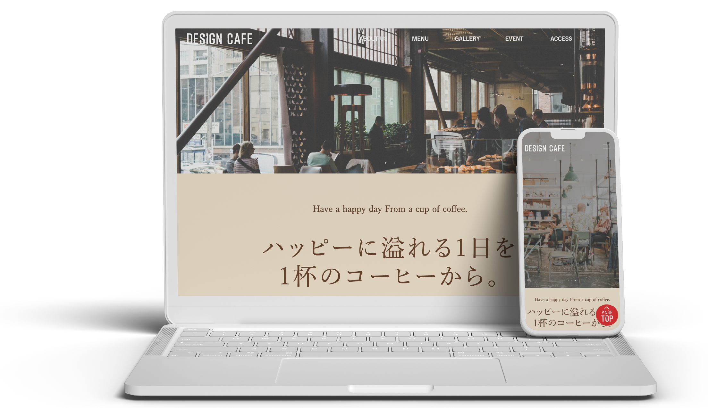
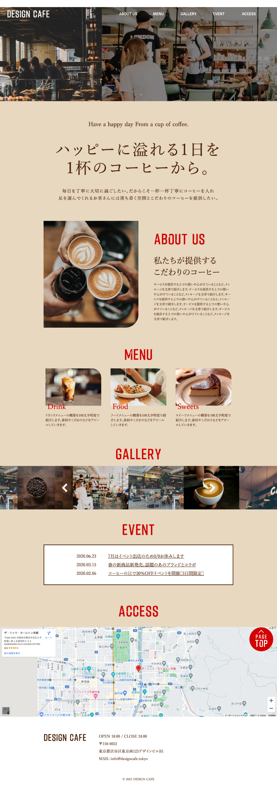
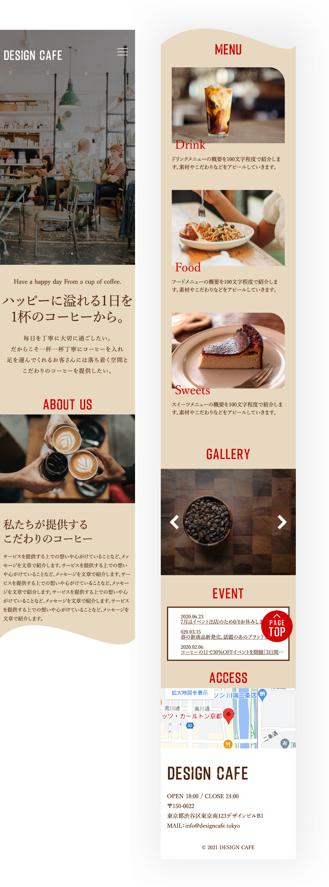

works > website
カフェサイト（架空）
2024.06


日頃からよくカフェを利用する
20代〜40代の男女

店内の雰囲気や大まかなメニューを知ってもらい、新規来店に繋げるため

2週間
HTML CSS jQuery

スクール課題として、架空のカフェサイトを制作しました。レスポンシブを意識したコーディングを心掛けました。

- ファーストビューと同等のサイズ感でリード文を載せることで、一杯のコーヒーに込めたお店側の想いを強調
- 画像をメインとするGALLERYとACCESS以外のセクションのコンテンツ幅を揃えることで視線移動を少なくし、情報を読み取りやすい設計に

- 使用する画像をコーヒーのイメージに合わせてダークトーンでまとめた
- アクセントカラーの赤とコーヒーカラーのブラウン、可読性の高い白の３色で揃える事で統一感を演出しつつ、カフェの落ち着いた雰囲気にも繋げた
- 画像をふんだんに使用する事で店内の雰囲気やメニュー構成などをイメージしやすくなり、初めての来店へのハードルを下げる効果を狙う



